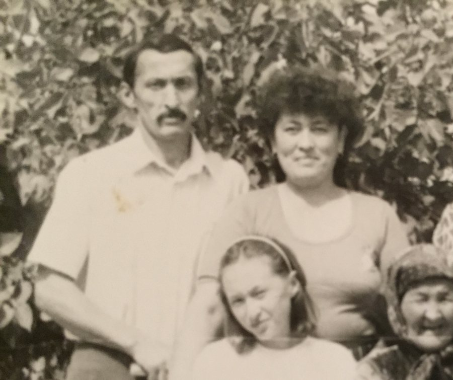
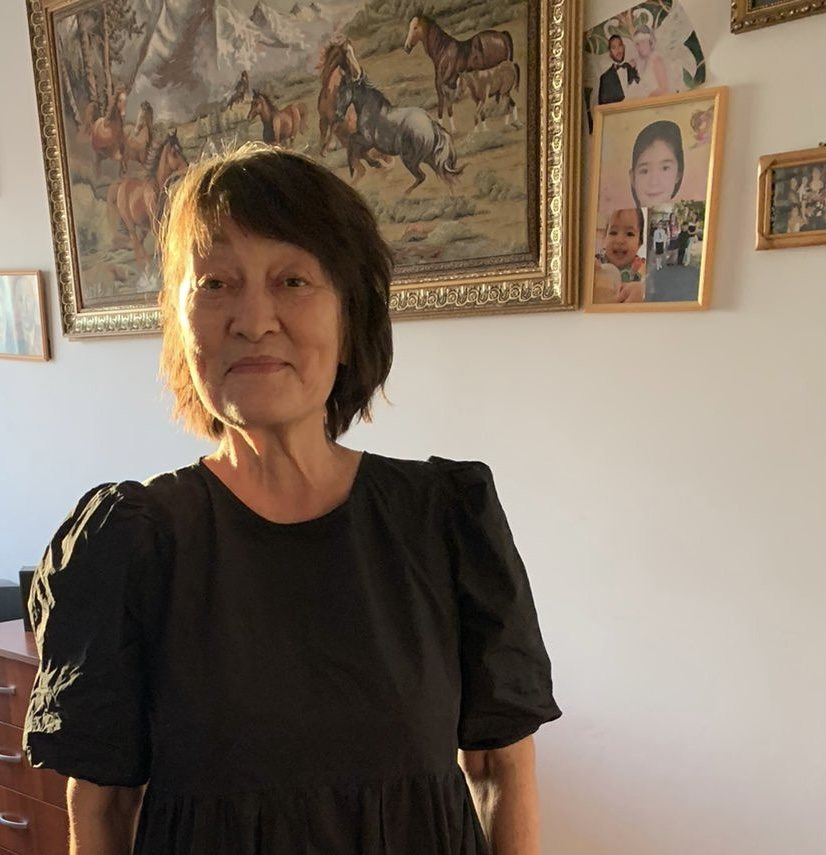
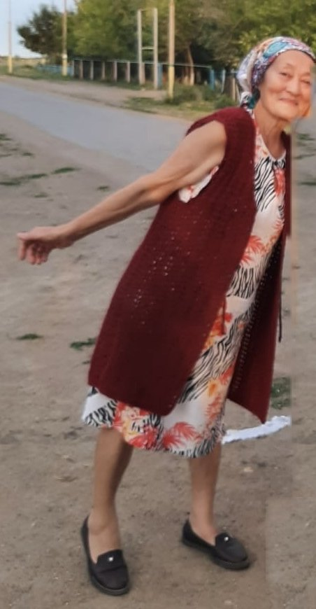
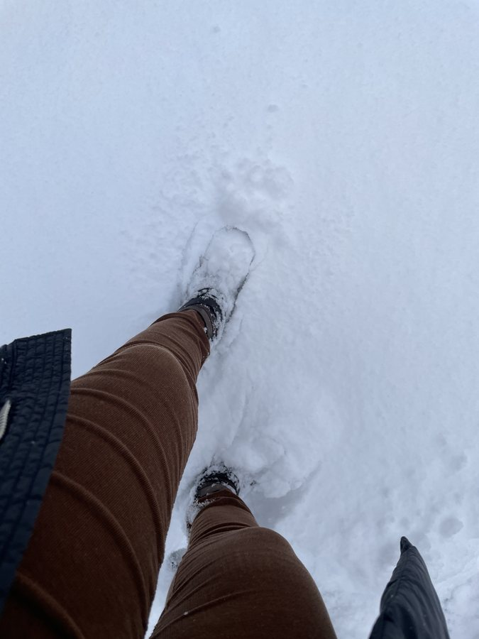

тексты · The Wind Girl · глава
🤍 О маме

давно, но как вчера
тёплое воспоминание под лилиями
Ты писала дочери. Писала себе. Писала об отце. А о ней молчишь.
— Потому что мама занимает особое место. О ней трудно начать. Сегодня я пишу ей.
Дома мы ласково зовём маму Апашка 🤍

хранительница наших воспоминаний
Что ты помнишь о ней первым?
— Заботу. Мама, ты заботилась так, как дышала: не дожидаясь просьбы и не умея иначе.

мама и папа
папа любит петь, а мама — танцевать
В нашем доме всегда кто-то был, и для каждого у тебя находились место, тарелка и тёплое слово. Я росла внутри этой заботы, как под одеялом. Только под ним было тесно: ты укрывала стольких, что тебя не всегда хватало на меня, когда ты была мне очень нужна.
Ты находила то, чего у нас не было: монетку на сникерс, костюм на выпускной, билет в мою новую жизнь.

так ты светишь
танцует со всеми нами
От отца ты узнала, что любовь бывает радостной. А чему научила она?
— Заботе. Её не просят и не выбирают — её излучают. Так светила ты.

всегда кого-то обнимает
Только себя ты не умела укрыть. Ты так привыкла заботиться о других, что забота о себе казалась тебе чем-то чужим.
Она отдавала всё. Иногда больше, чем у неё было.
— Я знаю. И от этого мне грустно.

в другой жизни
Я видел тебя в другой жизни, где в вашем доме чаще всего только вы пятеро: три сестры, мама и папа. Почти каждый вечер папа поёт, а мама танцует. И вы все весёлые.

тебе тоже холодно
Тебе тоже холодно. Тебе тоже жизненно важно одеяло. Любить — значит не исчезать. Жертвенность — это жестокость к себе.
облачное одеяло для мамы
Ветер, принеси ей моё тепло. Шепни, что со мной всё хорошо.
Я передам. И укрою её моим самым тёплым облачным одеялом.

облака для её одеяла

а теперь — от моей дочери 💜
Мама научила меня заботе. Заботе, которая всегда светит 💛
из моего романа The Wind Girl, в работе
если откликнулось, оставь сердечко 🤍
можно нажимать сколько хочется
спасибо, записка у меня 🤍